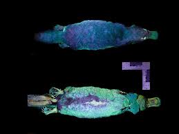
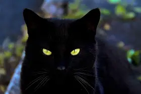

Misc facts about me
I know you are just gawking at my intellect but I would like to share some of the simple things so you futher understand the man behind the mask. firstly of these "fun facts" is something small like my love for deep blue greens things on that side of the color wheele just tickle my fancy I guess. That's probably why my favorite color is a cross between teal and turquoise just like the most beauitful block in Minecraft. Which is Prismarine if you didn't know. Speaking of Minecraft now would be good time for my commentary about why video games are an utter waste of time but that's already on my channel (@FlametopEli) and of course I would't give my brains away, there would be no point to waste my breathe for free. However I know your frothing at the mouth for my opinion so here's the TLDR I believe that many things like distracting video games are the reason for humanities lack in a single and synergized correct direction. I believe many things lack direction and thats why it fails animals are a primary example but by far the stupidest one is the platypus its so confused within it's self that it tries to go in many directions and fails them all. It's a mammal but dosen't give live birth and for some reason has pink milk. It has webed feet but it lives in burrows it digs with its lack of digging efficiency. They also for no other Reason glow under UV light just look at how stupid it is.
List of things I dislike
- Unclean animals
- Sports (swimming dosen't count because it's more of an art)
- Abstract poetry
- Accounts of war
- Story writting
- Video games
Thoughts and quotes
Why do you even have hands you might ask well I know why its to pick up type or write not to fight. Any and all sports they have physical contact as a way to "score points" is just barbaric and only suitable for the uneducated. In fact I have never felt the urge to apply physical force to get my point across nor have I ever wanted to. People in genral are just a lot nicer than you would think they are you simply just have to wait for there ideas to come out then complment them on things and wait. Oh actully this tidbit is more important I love cats in particular slick black ones. Now as I said before jounaling is one of my favorite activies however all great things must come to an end and I will try to give you something thought provoking to send you off with. "Sometimes people are dumb enought to not get a point so you got to highlight the problem."

look at how nice it looks